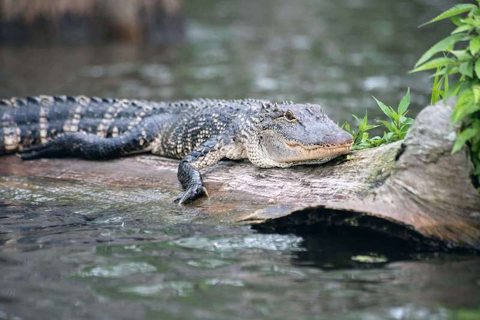

Alligators are fascinating creatures and important to the ecosystem of Georgia. They help maintain the population for certain animals and they help shape and modify habitats. Gators can be found in the wet environments of Georgia like marshes, swamps, slow moving rivers, and lakes. When in an area or hiking on a trail with the possibility of alligators, be on the watch, use common sense, give them the respect they deserve and leave them be.
 Source: Georgia Department of Natural ResourcesSnakes are also important to the Georgia ecosystem. They hunt rats and mice, and other animals that are referred to as pests. Some snakes can even be useful as bioindicators for indicating pollutants in wet ecosystems. The state of Georgia is also amongst the highest states with snake biodiversity at 47 different species of snakes, and out of all 47 species of snakes, only 6 are venomous. It's important to learn how to identify each venomous snake in Georgia in case you encounter them.
Eastern Diamondback Rattlesnakes are normally less than 6ft long and can easily be identified by the distinct diamond pattern on its back and the black bands over its eyes outlined by two pale lines.
Adult Timber Rattlesnakes normally range from 30-60 inches long and come in a variety of colors which is usually brown, yellow, or gray. It can be identified by the black chevron pattern on its back which transitions to a solid black closer to its tail.
The Carolina Pigmy Rattlesnake is a short and thick-bodied snake ranging from 14-22 inches long. It has a small rattle that is barely heard, and it can be pale gray, tan, lavender, and sometimes red or orange in color. It has a well defined pattern and can easily be identified by the one or two rows of lateral spots on its back.
Copperhead snakes are fairly large, ranging from 24-40 inches long. They are usually tan or brown and can be identified by the hourglass shaped crossbands along the length of the body.
Cottonmouth snakes are large snakes, ranging from 24-28 inches long. Their color varies highly and can be marked with dark crossbands on a yellow, black, or brown colored background. Adults typically have a more solid or darker coloring than juveniles.
Coral snakes are medium sized ranging from 18-30 inches long. The Coral snake is easily identifiable by the bright colors and red, yellow, and black bands of which the yellow rings touch between the black and red rings. The nose of the snake is colored black as well.

Learn more about some of the trails in Georgia:

Learn more about what supplies to bring: